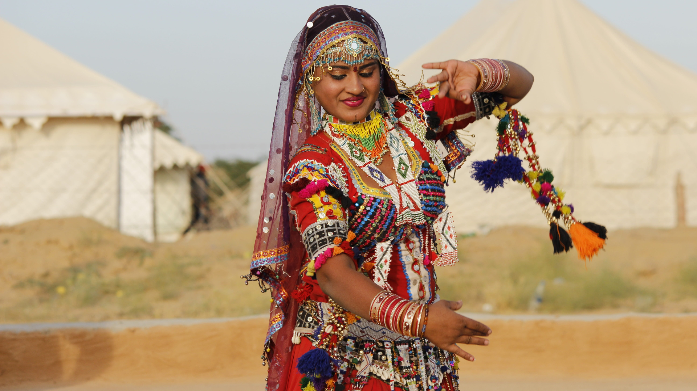
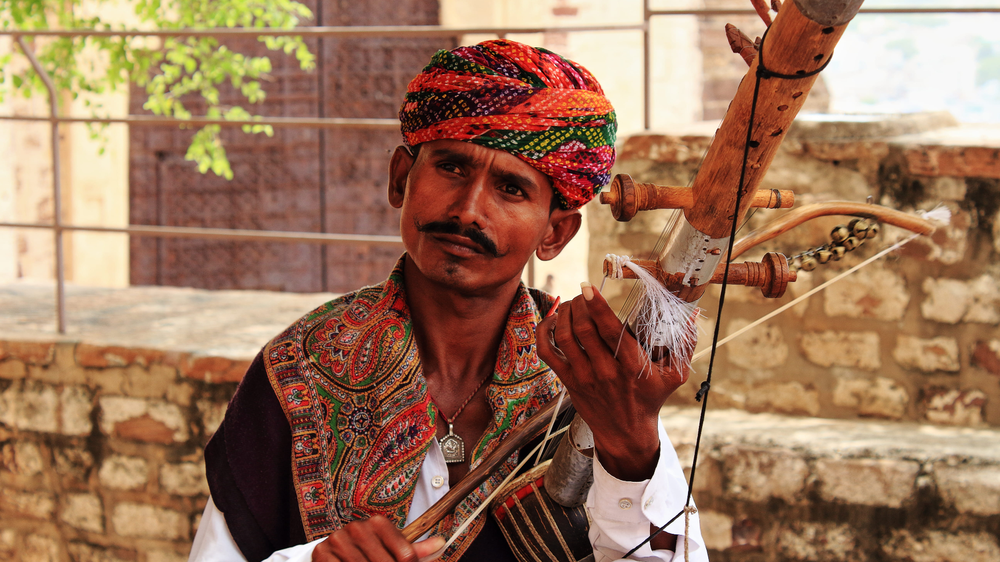

State of the Art
Rich Festivals
ExtraOrdinary Talents
Wildlife

A land where royalty is the way of living. A land where colours represent emptions. A land where celebrations know no boundaries and usher festivity among everyone. And a land that has endured its diverse range of cultures in the most benevolent ways. Welcome to Rajasthan, the ‘Cultural Capital of India’! One of the most alluring tourist destinations in the world, the ‘Land of Maharajas’ is one such place that showcases the most exuberant colours and cultures. From the costumes to people’s food habits, religious celebrations to social gatherings, Rajasthan is still adhered to its diverse traditions and rich cultures. Let’s embark on a sojourn through this imperial land
Rajasthani cooking was influenced by both the war-like lifestyles of its inhabitants and the availability of ingredients in this arid region. Food that could last for several days and could be eaten without heating was preferred. The scarcity of water and fresh green vegetables have all had their effect on the cooking. It is known for its snacks like Bikaneri Bhujia. Other famous dishes include bajre ki roti (millet bread) and lahsun ki chutney (hot garlic paste), mawa kachori Mirchi Bada, Pyaaj Kachori and ghevar from Jodhpur, Alwar ka Mawa (milk cake), Kadhi kachori from Ajmer, Malpua from Pushkar, Daal kachori (Kota kachori) from Kota and rassgullas from Bikaner. Originating from the Marwar region of the state is the concept of Marwari Bhojnalaya, or vegetarian restaurants, today found in many parts of India, which offer vegetarian food popular among Marwari people.Dal Bati Choorma, a traditional Rajasthani Dish. Dal-Bati-Churma is very popular in Rajasthan. The traditional way to serve it is to first coarsely mash the Baati, and then pour pure ghee on top of it. It is served with the daal (lentils) and spicy garlic chutney. Also served with besan (gram flour) ki kadi. It is commonly served at all festivities, including religious occasions, wedding ceremonies, and birthday parties in Rajasthan.
A pandemic is not new in human history. But what makes the COVID-19 pandemic special is that it takes place in an unprecedented backdrop when the interconnectivity and interdependence between people, between countries and between continents are so deep. The achievements people have made in technology, intelligence and transportation make them both physically and psychologically globalized.
Its major attractions include the ruins of Indus Valley Civilization, the oldest mountain range- Aravalli, a Jain pilgrimage site known as Dilwara Temples, Karni Mata Mandir, the only hill station of Rajasthan- Mount Abu, Keoladeo National Park (formerly known as Bharatpur National Park, the Ranthambore National Park and the Sariska Tiger Reserve. We offer you the best tour packages for Rajasthan that will cover all the above mentioned for a perfect holiday. Keeping in mind your travel needs and requirements we have designed distinctive tour packages for Rajasthan